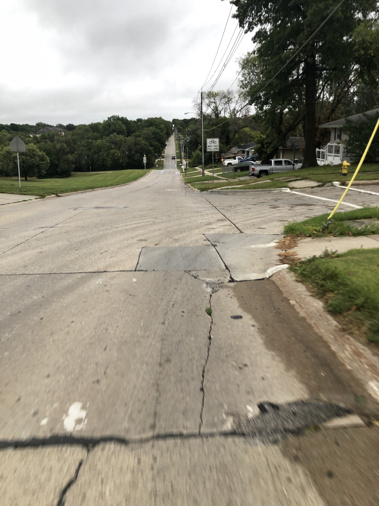
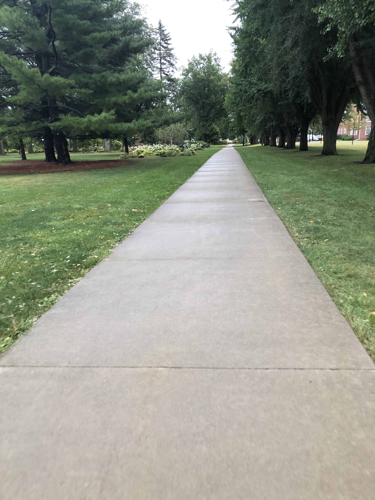

WELCOME TO INDIANOLA TRAILS

The Jerry Kelly Trail is almost 3 miles long. It starts at the trailhead of the Summerset Trail on E. Euclid Ave. The trail is named after the longest surving mayor of Indianola. It connects near by residents to schools, parks, & the other Indianola trails. The trail passes through Buxton Park at the northern end of Simpson College's campus. There are steep and longs hills during the part of the trail that is road. Would not recommend this trail for bikers or skaters.
| Click the images below to read two articles about the Jerry Kelly Trail. | |
|  |  |
|---|---|